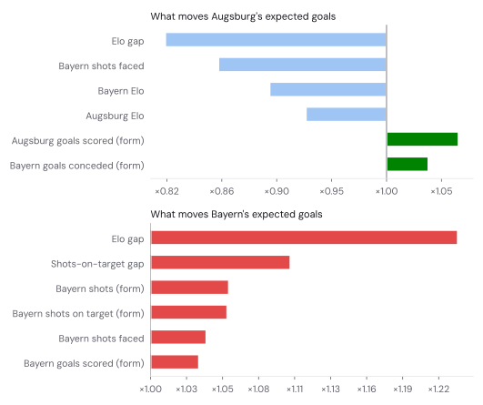
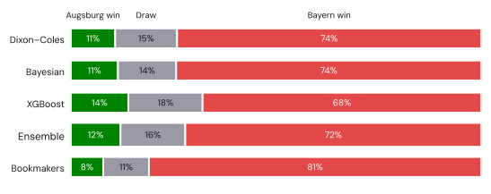
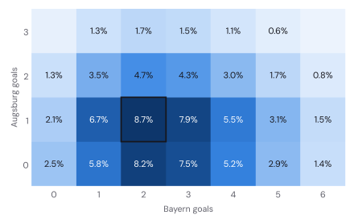
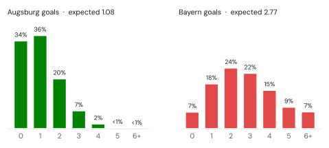
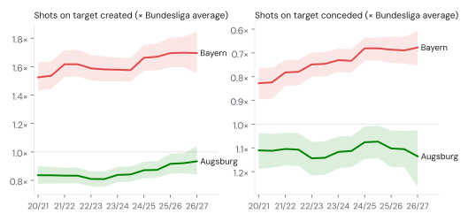
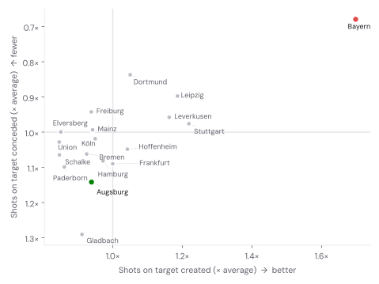
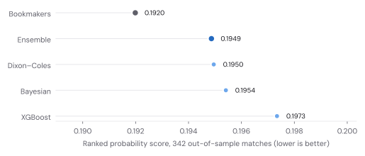
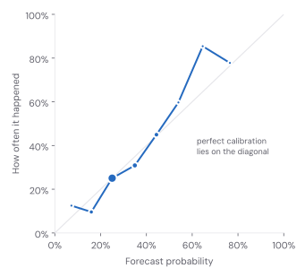

MATCHDAY 5 · PRE-MATCH FORECAST
Augsburg vs Bayern: three models, one stubborn underdog.
Augsburg won in Munich in January. The bookmakers have since recovered their composure and price Bayern at 1.17. I built three models to find out who is closer to the truth.
The short version
Expected goals 1.08 – 2.77 Most likely score 1–2 (8.7%) Over 2.5 goals 73% Both teams score 62%
Bayern should win. The ensemble gives them 72%, the bookmakers 81%. Augsburg get 12% from the models and 8% from the market. 12% is roughly the chance of flipping a coin three times and getting three heads. Unlikely, not absurd: Augsburg pulled off something rarer in January, when they won in Munich as 17.00 outsiders.
The single most likely score is 1–2, but don’t get attached to it: it turns up in fewer than one simulated match in eleven. The more useful summary is the shape: Bayern scoring two or three, Augsburg scoring once or not at all.
Form, after four matchdays
| 2026/27, matchdays 1–4 | Augsburg | Bayern |
|---|---|---|
| Points | 7 | 10 |
| Goals for – against | 11 – 6 | 14 – 2 |
| Shots for – against | 56 – 83 | 87 – 23 |
| Shots on target for – against | 29 – 29 | 35 – 8 |
| Goals per shot on target | 38% | 40% |
Bayern have allowed eight shots on target in four games. Augsburg’s goalkeeper has faced 29. That one line explains most of this forecast.
Augsburg’s attack has been genuinely good: 11 goals, at least two in every game, and wins of 3–0 against Schalke and 4–1 in Frankfurt. But they have been out-shot 83 to 56 and are converting 38% of their shots on target, against a Bundesliga average of 34%. Models treat hot finishing like a heatwave: enjoy it, don’t plan the summer around it.
Three models and an average
1. Dixon–Coles
The grandfather of football models (Dixon and Coles, 1997). Every club gets an attack and a defence rating, each team’s goals are a Poisson draw, and a small correction stops the model underrating 0–0 and 1–1. Recent matches count more: a result from a year ago counts half as much as last weekend’s. That half-life was tuned on the 2022/23 season, not on the matches it is judged on.
2. A Bayesian shots-to-goals model
This one thinks in two steps. First: how many shots on target will each side create? Second: how many of those go in? Splitting it matters because shots on target are much less noisy than goals. A team can be unlucky in front of goal for a month; it rarely gets out-shot by accident for a month.
Team strengths drift over time, with bigger jumps allowed over the summer when squads change. The model covers the 1. and 2. Bundesliga together, so promoted clubs arrive with a track record instead of a guess. Red cards and the empty-stadium season are accounted for when fitting, so a 10-man defeat doesn’t poison a team’s rating. It is fitted with NUTS, a Markov chain Monte Carlo sampler, giving 1,600 draws from the posterior, so every number comes with its own uncertainty. Here is the core:
# chance creation: shots on target ~ negative binomial
lam_h = exp(alpha + home_adv + att[h, t] - dfn[a, t] + red_eff * (red_a - red_h))
lam_a = exp(alpha + att[a, t] - dfn[h, t] + red_eff * (red_h - red_a))
# finishing: goals | shots on target ~ binomial
p_h = sigmoid(beta + gamma_home + fin[h, s] - keep[a, s])
p_a = sigmoid(beta + fin[a, s] - keep[h, s])
numpyro.sample("hst", dist.NegativeBinomial2(lam_h, phi), obs=sot_home)
numpyro.sample("hg", dist.Binomial(sot_home, probs=p_h), obs=goals_home)
# ...same for the away side. att and dfn move by half-season t,
# fin and keep by season s: all four are random walks.A nice property: thinning a negative binomial with a binomial gives another negative binomial, so the forecast score grid is exact rather than simulated. For this match the model expects Augsburg to manage 3.3 shots on target and Bayern 8.2, with 33% and 36% of them going in.
3. XGBoost
Gradient-boosted trees on 30 pre-match features: a home-made Elo rating, exponentially weighted form in goals, shots and shots on target (for and against), points from the last five, rest days and a promoted-club flag. Two boosters predict each side’s goals. Every feature uses only matches played before kick-off, and each season is predicted by a model trained only on earlier seasons.

The ensemble
The final forecast is the plain average of the three score grids. I fixed equal weights before looking at any results. That is less clever than optimising the weights, and much harder to fool yourself with.

All three models are more generous to Augsburg than the market. Part of that is information the models simply don’t have (more on that below); part is that pure results models are cautious by design. They have seen enough heavy favourites stumble to keep some probability in reserve.
The scoreline

Bayern win by two or more in 52% of outcomes. Augsburg score at least once in 66%. Augsburg keeping a clean sheet: 7%. Over 2.5 goals: 73%, which suits the fixture. The 15 Bundesliga meetings in Augsburg have averaged 3.4 goals.

How strong are they, really?
The Bayesian model’s latent ratings, re-expressed against the average Bundesliga club of each season. Shaded bands are 80% credible intervals.

Bayern create about 1.70× as many shots on target as an average Bundesliga side and allow about 0.68× as many. Augsburg’s attack has crept up towards average over three seasons (0.94× now); their defence still allows 1.14× the average, and has gone the wrong way since last season. The band around Augsburg’s 2026/27 numbers is wide: four matches are not much to go on, so the model leans on last season.

Should you trust it?
Fair question. I replayed the last 342 Bundesliga matches (all of 2025/26 plus this season so far) as if each one were next weekend’s fixture: every model refitted on only what it could have known at the time, then scored with the ranked probability score (RPS), the standard yardstick for win/draw/loss forecasts. Lower is better; a know-nothing model that says one-third for everything scores 0.238.
| Out-of-sample, 342 matches | RPS | Log loss | Top pick correct |
|---|---|---|---|
| Bookmakers | 0.1920 | 0.951 | 54% |
| Ensemble | 0.1949 | 0.964 | 55% |
| Dixon–Coles | 0.1950 | 0.965 | 55% |
| Bayesian | 0.1954 | 0.967 | 54% |
| XGBoost | 0.1973 | 0.969 | 54% |
The ensemble edges each of its parts, narrowly in Dixon–Coles’s case. That is the point of averaging: the models make different mistakes, and some of them cancel out.
The bookmakers are still better, by 0.0029 RPS. The 95% bootstrap interval runs from −0.0013 to +0.0072, so on these matches alone the gap could be luck, but the seasons before point the same way: from 2022/23 to 2024/25 Dixon–Coles trailed the market by 0.0067 a season on average and XGBoost by 0.0074. That is normal and slightly reassuring. Bookmakers price in line-ups, injuries and the opinions of people who bet serious money. A model that only knows results and shots shouldn’t beat them; if it did, I would look for a bug before I looked for a trophy cabinet.
This season, after 36 matches, the ensemble is actually ahead of the bookmakers (0.1991 against 0.2058). I am choosing not to read anything into that. Mostly.
Calibration matters more than accuracy for a forecast like this one. When the ensemble says 20%, the thing should happen about one time in five, and through the middle of the range the curve below says it does. One wrinkle matters today: at the top end the ensemble has been too cautious. Across its 76 forecasts of 60% or more, the average forecast was 69% and the outcome happened 82% of the time. That is a small sample, but it nudges the 72% for Bayern towards the bookmakers’ 81%.


What the model doesn’t know
- Team news. Pre-match reports list Jamal Musiala as out for Bayern, while Augsburg are without Steve Mounié, Noahkai Banks, Rim Breithaupt and Sima Suso, with Anton Kade doubtful. The models see results and shots, not line-ups. Four absentees against one, if anything, cut further against Augsburg.
- The international break. Both sides last played on 18–19 September. Form numbers come from September.
- January. Augsburg’s 2–1 win in Munich is in the data, but it is one match among thousands. Since Augsburg reached the Bundesliga in 2011 the record reads 23 Bayern wins, 2 draws and 5 Augsburg wins.
Verdict
Bayern win, most likely by two. For Augsburg fans the models offer 12% for a win and 16% for a draw: about 28% that the evening doesn’t end in mild despair. If Augsburg win, I will blame variance. If it finishes 1–2, I will pretend I was sure all along.
Run it yourself
Everything above, from data download to the last chart, runs in one notebook. Choose a GPU runtime: the Bayesian model’s chains run on the GPU through JAX, and XGBoost trains with CUDA.
Open the notebook in Google Colab ↗It pins the data to the same snapshot, so you should land within about a percentage point of the numbers here (MCMC is random, and GPUs do arithmetic in a slightly different order).
Data and sources
Results, shots, shots on target and bookmaker odds: football-data.co.uk, via the xgabora/Club-Football-Match-Data GitHub mirror (2005/06 to matchday 1) and football-data.co.uk directly for matchdays 2–4. Results cross-checked against openfootball. Bookmaker price for this match (12.00 / 8.50 / 1.17) and team news from pre-match reports by Starting11 and Khel Now; team news was not used by the models. Method references: Dixon & Coles (1997), Modelling association football scores and inefficiencies in the football betting market; Hoffman & Gelman (2014), The No-U-Turn Sampler.